从 Github 下载源码，执行命令:
1 | cd zookeeper |
编译成功后，将文件夹 build/java/generated 中的源文件拷贝到 src 目录下面，以便我们从源码运行程序。如果导入到 idea 的话，需要将 src 文件夹标记为源码根路径。
我们之所以要切换到这一个不同的分支上，是因为这个阶段的代码处于 ZooKeeper 的早期阶段，且功能较为成型，有助于简化我们对 ZooKeeper 的分析。
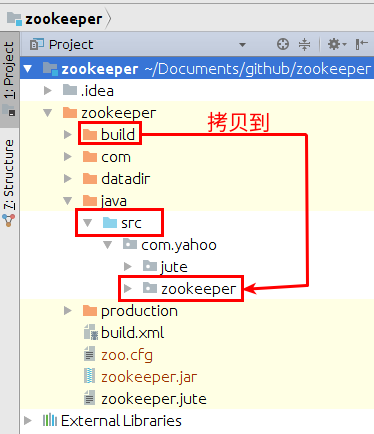
在 idea 中，打开文件 ZooKeeperServer.java，点击右上角的 Edit Configurations，配置参数
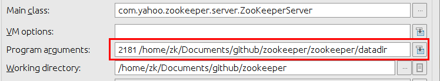
之后，右击 Apply ，然后运行 ZooKeeperServer.main() 启动 ZooKeeper 服务器。
同理，我们需要配置 ZooKeeper.java 参数为:
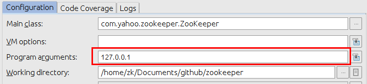，之后运行 ZooKeeper.main() 方法启动 ZooKeeper 客户端。
为了简化节省篇幅，着重描述核心处理流程，我在不影响运行逻辑的情况下，对代码片段进行了简化与修改，将一些异常处理机制，上下文等信息都去掉了，方便我们分析整个执行流程。
在创建 ClientCnxn 对象的时候，其 hosts 参数允许你传入一系列服务器地址，就像下面这样:
1 | public ClientCnxn("192.168.1.2:2181,192.168.1.3:2181", ...) |
之后客户端会把这些地址全部放入 serverAddrs 数组列表中，然后随机打乱:
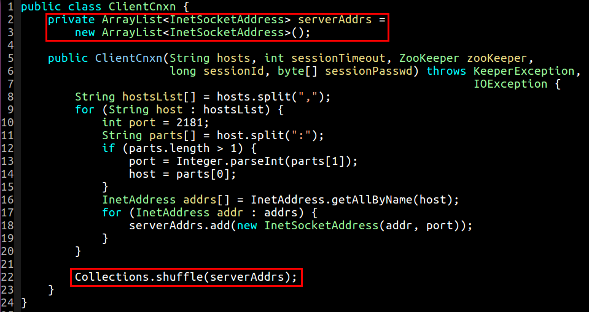
当客户端每次尝试连接的时候，便会从这些列表中按照顺序选择下一个地址进行连接尝试:
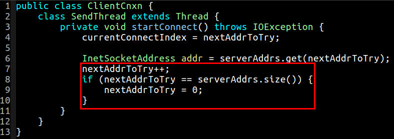
当指针 nextAddrToTry 到达服务器列表地址的时候，将会重新归置为 0 ，然后从头开始选择地址。值得说明的是，SendThread 线程的主体代码整个都被包含在一个大大的 try ... catch ... 语句块中，任何异常 Exception 的捕获，都将导致客户端回到初始状态，关闭 socketChannel 的连接等，设置 sockKey 为 null，然后进行新一轮的 startConnect 连接:
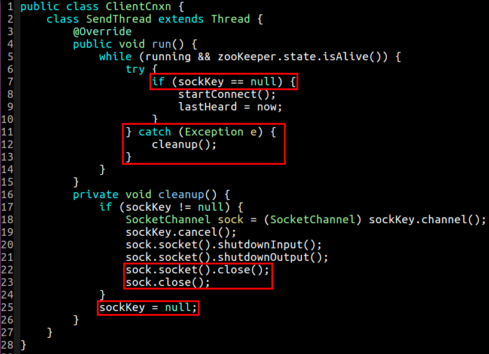
在 SendThread 启动以后，它会尝试与服务器建立连接:
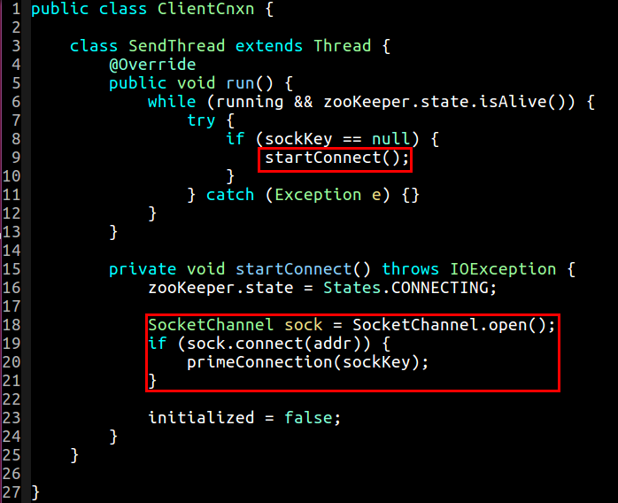
注意，由于 SocketChannel 被配置成了非阻塞模式，所以 sock.connect 在成功连接上之前会立即返回 false。在非阻塞模式下，应该通过检测 finishConnect 方法来查看是否已经连接上服务器:
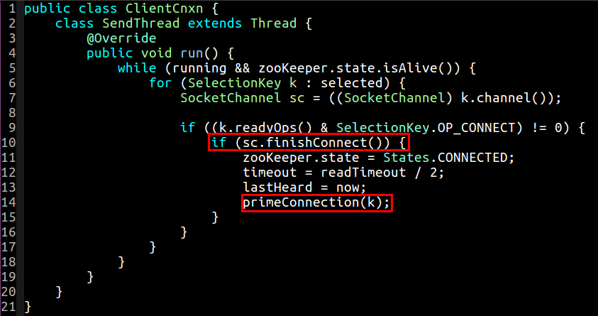
如果已经连接上，那么它将会调用 primeConnection 方法；否则抛出异常，进行下一轮重连:
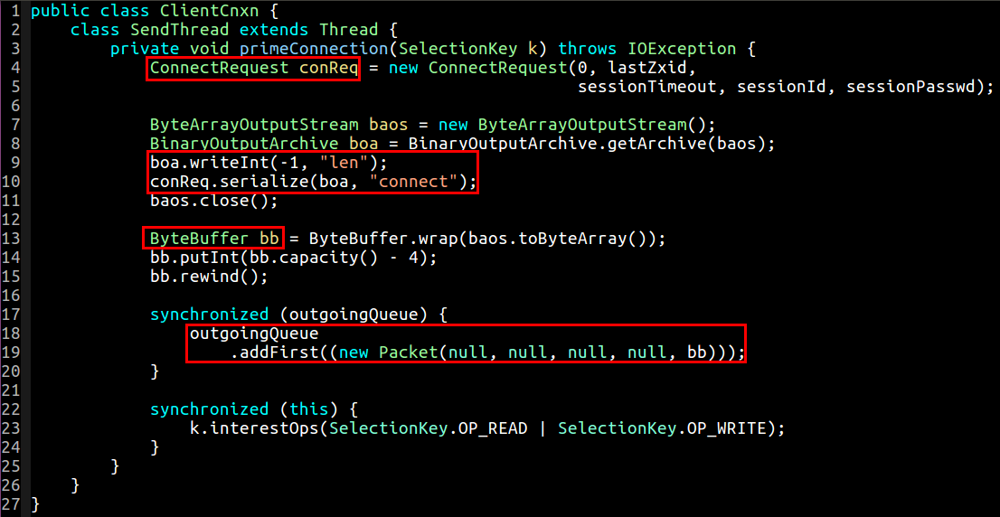
我们可以看到在 primeConnection 方法中，构建了一个 ConnectRequest 对象，最终将其写到 ByteBuffer 对象中，然后用 Packet 对象封装 ByteBuffer 对象，并放入 outgoingQueue 中。outgoingQueue 的定义如下:
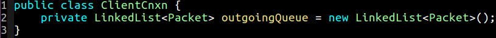
最终 ByteBuffer 对象中存储的是下面的一些字段:
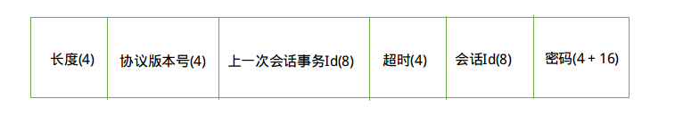
括号里面的数字表示字段长度。位于密码字段的 (4 + 16) 表示，发送了 4 个字节的长度和 16 字节的字节数组，BinaryOutputArchive 在写字节数组的时候，会先写进去长度，然后再写实际的字节数组进去。由上图可知，客户端在尝试建立连接的时候，给服务器发送了共 48 字节的数据。
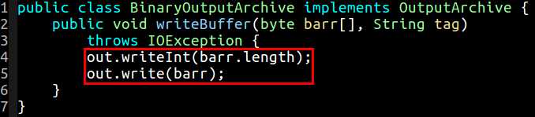
当客户端检测到有可读或者可写事件的时候，它会调用 doIO 方法，来让我们处理可读或者可写的数据，outgoingQueue 会从头部取出第一个 Packet，然后通过 SocketChannel 发送出去:
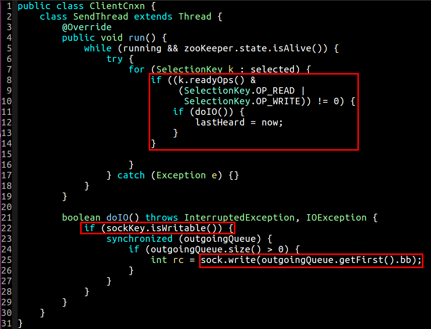
与客户端一样，当服务器端有可读数据的时候，在 doIO 方法中会读取 ConnectRequest 对象:
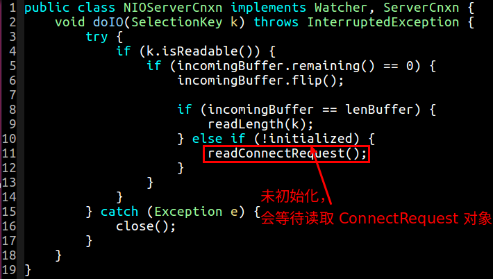
当读取到 ConnectRequest 对象的时候，才会将 initialized 标志设为 true:
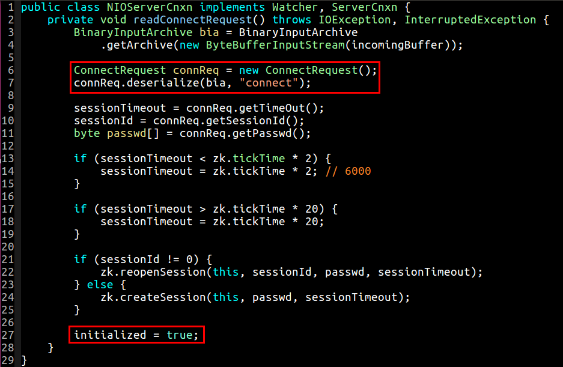
前面讲到，客户端在发送 ConnectRequest 对象的时候，在前面还发送了一个 4 字节长的长度，然后再发送的 ConnectRequest 对象的那些字段，再读取 ConnectRequest 对象数据之前，服务器端会先把这个长度给读取了:
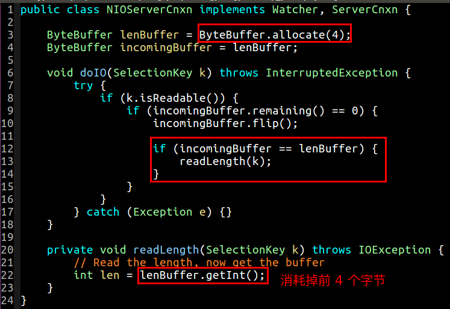
当服务器发现有连接过来的时候，便会检查该客户端的 session 状况，如果 sessionId 不为 0，那么则重新打开 session，否则会创建新的 session。session 具体的执行机制我们后续会讲到，这里先假设按照正常逻辑执行，请求创建 session，会提交一个类型为 OpCode.createSession 请求:
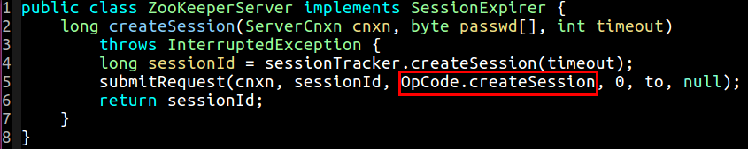
这个请求沿着调用链执行过去，最终会在 FinalRequestProcessor 停下来:
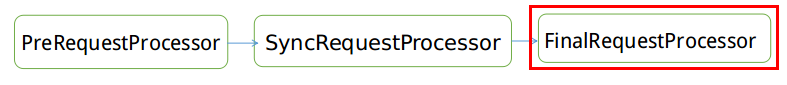
FinalRequestProcessor 对象会根据请求的类型来执行相应的方法。当创建会话完成的时候，这个时候 ZooKeeper 调用了 finishSessionInit 方法:
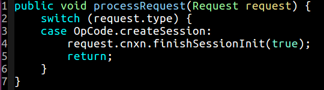
在 finishSessionInit 方法内部，服务器会发送一个 ConnectResponse 对象给客户端，告诉其会话创建完毕，也意味着初始化完毕，可以干其他事情了:
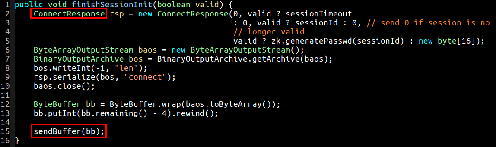
其中 ConnectRequest 的构成如下所示:
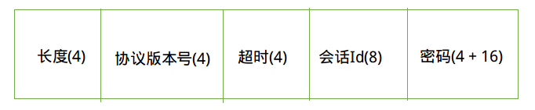
所谓 sendBuffer 其实就是将 ByteBuffer 对象放入了阻塞队列 outgoingBuffers 队列中，等待发送。这部分机制与客户端发送机制大同小异，如此不在赘述。
当客户端准备好数据开始往客户端写的时候，与此同时久久等待的客户端早已经翘首以盼了。在自己的 doIO 方法里一旦检测到有数据可读便立马着手处理了…
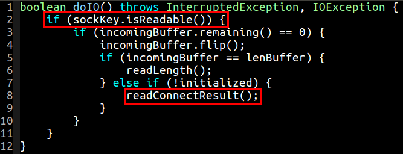
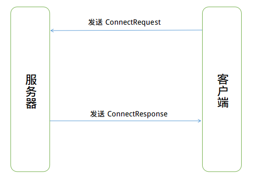
这一去一回的交互机制，主要是为了建立客户端到服务器的一个会话信任机制。
上述我们讲到的是，当服务器接收到来自客户端的 ConnectRequest 对象的时候，初始化成功；当客户端接收到返回自服务器的 ConnectResponse 的时候，客户端初始化成功。那么什么时候客户端会初始化失败呢？有这么几种情况:
sessionId 与 passwd 不匹配sessionId 在服务器端并不存在在这两种情况下，服务器会往客户端发送一个长度为 0 字节的 ByteBuffer:
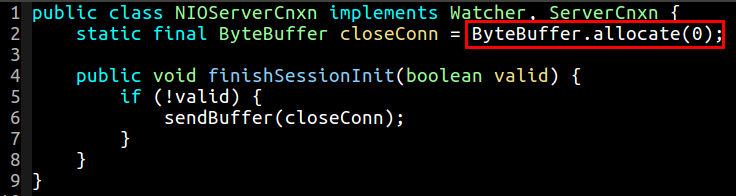
而客户端 ClientCnxn 在收到这样一个 0 字节数据的时候，会抛出异常:
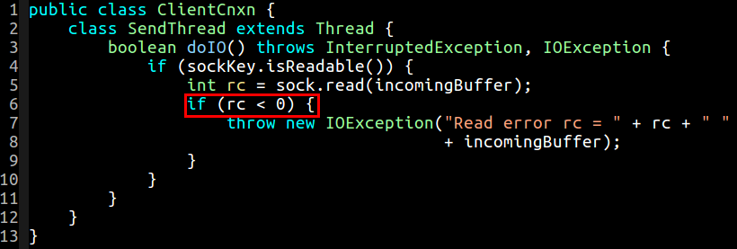
这个时候，客户端会稍稍调整，以准备下一次重新发送 ConnectRequest 对象给服务器。
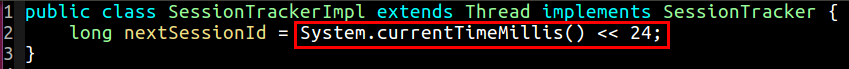
在生成完 Session 之后，会将其保存到两个地方，一个是 sessionsWithTimeout 字典里面，另外一个是 sessionsById 字典里面:
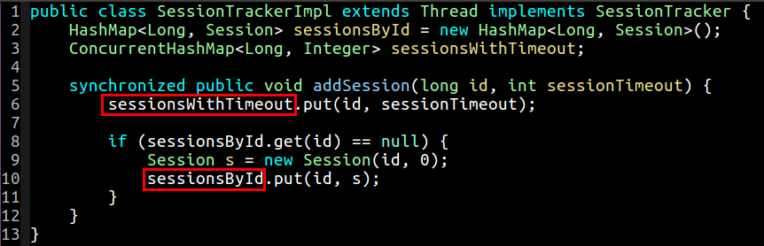